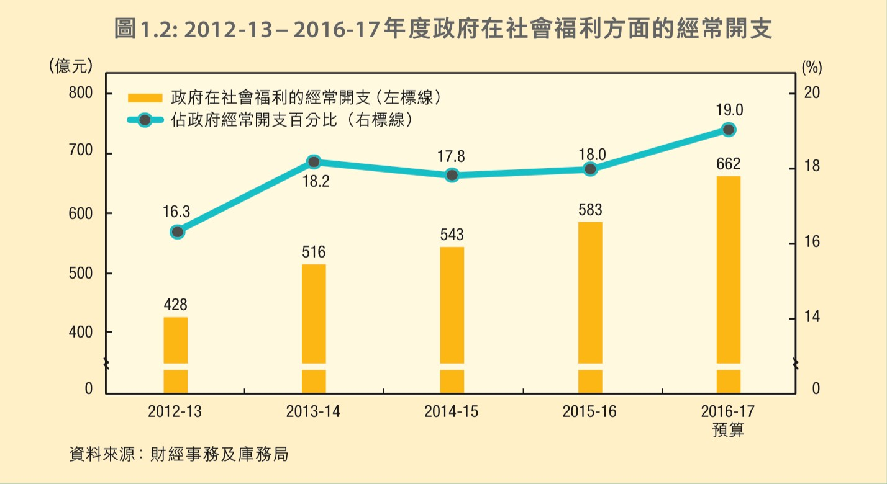

根据世界卫生组织在2018年1月发布的数据，每年全球有近80万人自杀身亡，更多人自杀未遂。 自杀是影响家人、社区和整个国家的悲剧，对死者亲友造成持久的影响，自杀发生在生命周期的各个阶段。在香港，根據死因庭截至2016年所提供的數據，中心估測香港每10萬人中12.6人死於自殺。香港的老人自杀率往往比欧美国家高两三倍。
他们的生活和境遇被媒体所忽视
香港报纸关于自杀事件报道的年龄分布
香港近年學生自殺风气盛行，再次将自杀的话题推向了舆论讨论的中心。通过我们收集到的583份香港本地报纸（东方日报、明报、苹果日报）在2016年对自杀事件的报道中，47%的死亡事件为少年和青少年。而仅有4%的死亡事件是关于长者死亡。但现实情况是如此的吗？根据香港大学防止自杀研究中心公布的数据来看，近10年来，香港长者自杀率一直高于23%，为所有年龄层最高。2016年，长者自杀率为23.8%，约为15-24岁自杀率的3倍。这与香港纸媒的报道的情况相比差距甚远，老年自杀问题规模的弱化与近年来对城市学生自杀惨剧的关注形成鲜明对比，这一定程度上反应了老年自杀问题没有得到社会足够的重视。
香港各年龄组的自杀比例 单位%
为什么香港有如此多老年人倾向于自杀？
老年贫困度高，维持生活艰难
根据香港扶贫委员会公布的数据，2016年政策介入前，65岁以上长者贫困人口为47.8万人，较上年增长19.3%，较2009年增长111.9%，远高于整体贫困人口增长；2016年贫困率为44.8%，是整体贫困率的2倍多，为所有年龄组最高。政策介入后（恒常现金），65岁以上的长者贫困人口虽有下降，为28.9%，但贫困率仍高于30%，老年人生活不容乐观。一年的生活费用、公屋租金、医疗保健算下来已经入不敷出。即使长者有一些存款，但对于残酷的生活来说，也不过也只是釜底抽薪。
独居老人多，抑郁孤独是多数老人内心的写照
在2016年，只有長者的家庭住戶數目達261 421戶。而這些只有長者的住戶中，有大部分（58.3%）是獨居的長者。尤其值得留意的是，獨居長者住戶由2006年的98 829戶上升至2016年的152 536戶，大幅上升54.3%。而由兩名長者組成的只有長者的住戶比例，在期間亦由40.2% 上升至41.0%。 长期的独居生活让老人缺乏交流和依靠，更容易产生心理问题。据BBC中文网的一篇报道，抑郁症是老人自杀背后最重要的心理因素[1]。政府曾委托两间大学进行研究，2002年发表报告。研究发现，60岁以上、自杀身亡的人当中，56.5%患上抑郁症。与此同时，老年抑郁症问题又是常常被人们所忽视的。林一星，香港大学社会工作系主任说：“社会上有一种假设，即如果老年人的行为奇怪，可能是因为痴呆症。人们通常会将衰老与负面形象联系在一起，如失望，孤独和绝望，所有这些都是促使老年抑郁症现象不被重视的原因。”
香港2026年进入超老年社会，长者抚养压力大
根據世界衛生組織（WHO）的定義，65歲以上老年人口超過7%為「老龄化社會」、達到14%為「老龄社會」、超過20%則為「超老龄社會」；根据香港政府统计处2016-2066的人口推算数据显示，香港在2026年，65岁以上的人口为23%，进入超老龄化社会。2016年，香港的长者抚养率为218，2046年将上升到529，届时，每小于两个劳动人口就要抚养一位老人，老无所依将是香港长者们的生活写照。然而因高齡者生理機能退化及慢性疾病增加的情況難以避免，相對的政府或社會需要花費在醫療及照護的費用，也將快速增加。
这一切悲剧本可以避免，现在，不算太晚
针对老年自杀的困境，我们能够做些什么？
政府承担更多责任，加强社会保障
根据政务司公布的数据，在2016-17年度，政府社會福利的經常開支預算為662億元，佔政府經常開支19%，僅次於教育。與2012-13年度相比增加了55%，遠高於在同一期間整體政府經常開支平均32%的升幅。[2]
而从另一项社會福利署发布的2016-2017年的各項社會保障計劃的開支来看，政府在長者生活津貼下增加一層高額援助 - 高龄津贴，向合資格領取津貼的較有經濟需要長者，即單身長者資產不多於144,000元，或長者夫婦資產不多於218,000元，提供每人每月3,435元的高額津貼。一定程度上反应了政府在老年扶贫问题上的态度。但在社區照顧服務，护理人员计划等方面，还需改善。
社会给予更多关爱，让长者有地可诉
前文提及到老年人自杀多伴随着心理问题，抑郁症是老年人难以生活下去的心结。在国外，针对此问题有很多的公益组织帮忙改善状况。自杀热线便是其中非常有效的途径。2017年，美国一首以自杀热线电话为名的歌曲‘1-800-273-8255’ 在全球走红，促使通话量较2016年上升了33%,达到历史第二高点，谷歌搜索热度上升了100%，NSPL主办组织者约翰德雷珀说：“这首歌改变了一切，这太振奋人心了。目前该组织在全国运营着160个自杀预防中心[3], 对比而言，香港目前有至少7个自杀服务热线，分别为生命熱線 : 23820000，香港撒瑪利亞防止自殺會熱線 : 23892222，，撒瑪利亞會熱線︰28960000，醫院管理局精神健康專線 : 24667350 ，東華三院芷若園熱線︰18281，學友社學生熱線：25033399，社會福利署熱線︰23432255… 笔者随即拨打了前三个电话，想进一步了解香港本土的现状，但遗憾的是没有一家能接通电话。如果能将这些资源和渠道进行整合和规划，以统一且更有效的形式出现的话，笔者相信一定能挽救更多想轻生的同胞们。同时，可以开通长者专线，定期回访长者，让他们感到社会的关爱是我们可以做且应该做的。
常回家看看，不只是说说而已
独居是大部分香港老人的晚年境地。如果我们愿意常回家看看，而不只是在春节的时候回家探望一次，情形或许会大不相同。时常与父母保持联系，了解他们的日常生活，花更多时间与他们在一起，做他们喜欢做的活动，无论是徒步旅行还是打麻将，这对于预防抑郁症和自杀的可能性会有效。金钱和药物从来不是解决自杀的灵丹妙药，但是陪伴是，亲情是，爱是。
衰老是人类之殇
有人说人在死亡前，脑海里会加速放映自己的一生，回到一生中最印象深刻的时间点，或许是初恋相见的第一面，或许是新婚夜上的见证之吻，或许是自己孩子来到世界的第一声哭啼，抑或是亲人离别时的最后一滴眼泪…但最怕的是，生命中最后一刻只剩心如枯木，无可留念，那太悲哀了。 我们每个人都会变老，每个人也许都会有想要结束自己的那一天，但我希望那一天永远不要到来，因为我坚信我们生活的社会，还有那些善良的微笑，可爱的家人，良知的政府，值得我留恋，值得我再鼓起勇气，和残酷现实作战。